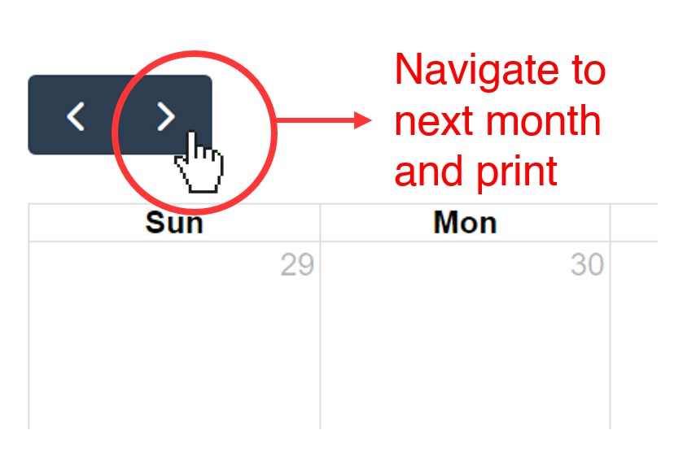

This is a dynamic calendar to help patients keep track of their cancer infusion schedule (with doxorubicin/ifosfamide and doxorubicin/cisplatin regimens). It was specifically made to print handouts for sarcoma patients in Dr. Davis' Vanderbilt Clinic.
How to use:
To use, click on the above calendar button for the correct chemotherapy regimen. The calendar will automatically update to start day 1 cycle 1 on the next Monday (for the doxorubicin/ifosfamide schedule) or next Monday/Thursday (for the doxorubicin/cisplatin schedule). Labs and clinic visit at white blood cell count nadir is on approximately day 10 for patients (the following Thursday/Monday).
To print the first cycle (in the current month), just print the first page using the system print.
To print multiple cycles (in the next months), click to the next month and print from that page:

You can also drag and drop events to another day to customize a patient's schedule. For example, you can drag and drop next Thursday's labs to Friday if you will be out of town Thursday. Note: This will reset if you refresh the page.
Information about the Chemotherapy Calendar's creation:
Created by Evonne McArthur (Vanderbilt MD/PhD student)
Information on how to customize this schedule and adapt it to your own clinic is available on my Github here. Please feel free to fork the respository or contact me with questions.
The code is based extensively on html/javascript/css from Fullcalendar.